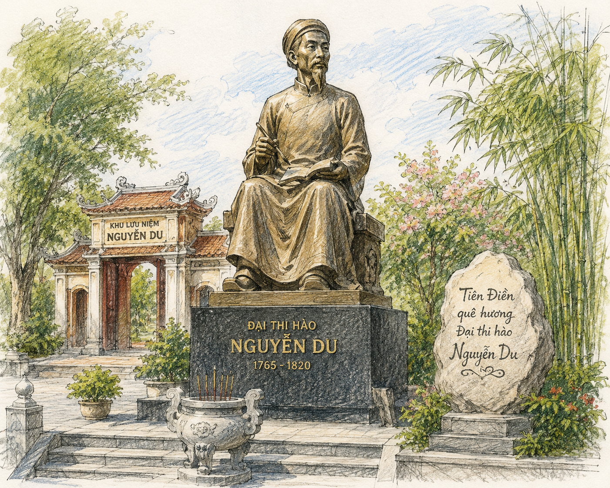

Lặp cấu trúc:
Là biện pháp tu từ sử dụng những cụm từ hoặc câu có cùng kiểu cấu trúc nhằm nhấn mạnh nội dung cần biểu đạt, tạo nhịp điệu và tăng tính nhạc cho lời văn.
Biện pháp tu từ Đối:
Sử dụng những từ ngữ (cùng từ loại) hoặc câu (cùng cấu trúc) sóng đôi nhằm nhấn mạnh sự tương đồng hoặc tương phản, tạo nhịp điệu và vẻ đẹp cân xứng.
"Truyện Kiều của Nguyễn Du đã hoà nhập vào đời sống, sinh hoạt văn hoá của dân tộc Việt Nam. Bạn hãy nêu một trường hợp có sử dụng hình thức đố Kiều, lẩy Kiều hoặc vịnh Kiều trong thực tế đời sống mà bạn biết?"
Thông tin cá nhân & Quê hương:
• Sinh ra trong gia đình đại quý tộc, có truyền thống đỗ đạt cao và đam mê văn chương nghệ thuật.
• Sống trong thời kỳ lịch sử đầy biến động dữ dội của xã hội phong kiến Việt Nam cuối thế kỷ XVIII - đầu thế kỷ XIX.
• Thời thơ ấu: Sống êm đềm trong vàng son, nhung lụa của gia đình quý tộc.
• Năm 1784: Kiêu binh nổi loạn, phá nát dinh cơ Nguyễn Khản. Nguyễn Du trải qua nhiều năm tháng lận đận, tha hương, "mười năm gió bụi".
• Năm 1788: Triều Lê - Trịnh sụp đổ, Nguyễn Huệ lên ngôi hoàng đế.
• Năm 1802: Nhờ tài năng, ông ra làm quan cho nhà Nguyễn (thời Gia Long), từng làm Chánh sứ đi Trung Quốc (1813).
• Năm 1820: Chuẩn bị làm Chánh sứ lần 2 dưới thời Minh Mạng thì lâm bệnh qua đời tại Huế.

Tượng đại thi hào Nguyễn Du tại Khu lưu niệm Nguyễn Du ở huyện Nghi Xuân, tỉnh Hà Tĩnh (h1.png)
Gồm 3 tập thơ chính với tổng số 250 bài thơ, thể hiện trực tiếp chân dung tâm hồn và tư tưởng tác giả:
(78 bài thơ)
• Sáng tác trong những năm tháng gian kề, cơ cực nhất.
• Chất chứa bi kịch cá nhân, gia đình tan tác, sống quẫn bách bế tắc.
• Thể hiện niềm thương thân, đồng cảm sâu sắc với nỗi đau quê hương, đất nước.
(40 bài thơ)
• Sáng tác thời kỳ làm quan cho nhà Nguyễn.
• Bày tỏ sự chán nản, thất vọng chốn quan trường, khao khát về ẩn dật.
• Xót xa trước thân phận con người trong cảnh loạn lạch, đánh giá sâu sắc sự suy thoái xã hội.
(132 bài thơ)
• Sáng tác trong chuyến đi sứ Trung Quốc (1813 - 1814).
• Cảm thương những kiếp người nhỏ bé, tài hoa mà bạc mệnh (Khuất Nguyên, Đỗ Phủ, Tiểu Thanh...)
• Thể hiện tinh thần phản biện, cái nhìn sắc sảo về lịch sử và xã hội.
📌 Giá trị chung của thơ chữ Hán Nguyễn Du:
Lưu giữ thế giới tâm hồn phong phú, khái quát hiện thực cao và giàu giá trị nhân văn. Đánh dấu hành trình tư tưởng: từ hiểu mình, thương mình đến thấu hiểu con người và thương đời.
• Văn tế sống hai cô gái Trường Lưu: Thể văn tế, tình tứ, lãng mạn, giọng điệu trẻ trung.
• Thác lời trai phường nón: Thể lục bát, đậm chất ca dao tục ngữ.
• Văn tế thập loại chúng sinh (Văn chiêu hồn): Thể song thất lục bát, tiếng khóc thương bao la cho muôn kiếp nhân sinh khổ đau, mồ côi, bất hạnh.
• Truyện Kiều (Đoạn trường tân thanh): Kiệt tác văn học đỉnh cao của dân tộc.
Nguồn gốc đề tài, cốt truyện và vị trí:
• Thể loại: Truyện thơ Nôm, thể lục bát gồm 3.254 câu thơ.
• Tiếp thu cốt truyện Kim Vân Kiều truyện của Thanh Tâm Tài Nhân (Trung Quốc) nhưng được sáng tạo lại hoàn toàn bằng thiên tài nghệ thuật và cảm hứng nhân đạo sâu sắc.
• Sức cuốn hút mãnh liệt, tạo nên các hình thức sinh hoạt văn hóa độc đáo: lẩy Kiều, vịnh Kiều, đố Kiều, bói Kiều,... Đã được dịch ra hơn 70 bản dịch trên thế giới.
Tháng 10 năm 2013, Đại hội đồng UNESCO (Tổ chức Giáo dục, Khoa học và Văn hóa Liên Hợp Quốc) đã chính thức vinh danh Đại thi hào Nguyễn Du là Danh nhân văn hóa thế giới. Đây là sự ghi nhận tầm vóc quốc tế cho những đóng góp to lớn của ông đối với kho tàng văn hóa nhân loại.
Tự tay sưu tầm các câu ca dao, thành ngữ hoặc các tác phẩm âm nhạc, hội họa hiện đại được truyền cảm hứng từ Truyện Kiều để thuyết trình trước lớp về sức sống bền bỉ của kiệt tác này trong lòng dân tộc.
Câu 1: Lập niên biểu Nguyễn Du và nêu nhận xét về cuộc đời, con người ông?
• Niên biểu chính: 1765 (sinh tại Thăng Long) → 1784 (kiêu binh nổi loạn, gia đình sa sút) → 1802 (làm quan nhà Nguyễn) → 1813 (đi sứ TQ) → 1820 (mất tại Huế).
• Nhận xét: Cuộc đời trải qua nhiều biến cố, thăng trầm; là người có vốn sống phong phú, trái tim giàu nhân ái và tài năng văn chương thiên phú.
Câu 2: Tóm tắt cốt truyện Truyện Kiều theo 3 phần?
1. Gặp gỡ và đính ước: Thúy Kiều tài sắc vẹn toàn gặp Kim Trọng trong hội Thanh minh, hai người đính ước.
2. Gia biến và lưu lạc: Gia đình Kiều bị vu oan, Kiều bán mình chuộc cha. Sau 15 năm lưu lạc qua tay Mã Giám Sinh, Tú Bà, Thúc Sinh, Hoạn Thư, Từ Hải...
3. Đoàn tụ: Nhờ Kim Trọng đi tìm, Kiều trở về đoàn tụ gia đình nhưng "duyên đôi lứa cũng là duyên bạn đời".
Thử thách 10 câu hỏi củng cố kiến thức về Đại thi hào Nguyễn Du
Bài tự luận 1 (Phân tích giá trị nội tâm):
Hãy chỉ ra sự khác biệt cơ bản giữa cách Nguyễn Du khắc họa nhân vật Thúy Kiều so với nhân vật Thúy Kiều trong Kim Vân Kiều truyện của Thanh Tâm Tài Nhân?
Lời giải chi tiết:
• Trong Kim Vân Kiều truyện, các nhân vật chủ yếu hành động theo tình tiết cốt truyện, ít có đời sống nội tâm, tâm lý đơn tuyến.
• Trong Truyện Kiều, Nguyễn Du tập trung khám phá "con người bên trong". Ông xây dựng Thúy Kiều thành nhân vật đa diện, có bi kịch tâm hồn sâu sắc, luôn trăn trở về phẩm giá, có tinh thần phản kháng và không bao giờ chấp nhận sự tha hóa dù rơi vào cảnh bùn nhơ.
Bài tự luận 2 (Kết nối Đọc - Viết):
Viết đoạn văn (khoảng 150 chữ) phân tích một biểu hiện của tư tưởng nhân đạo trong Truyện Kiều?
Mẫu đoạn văn tham khảo:
Tư tưởng nhân đạo trong "Truyện Kiều" trước hết thể hiện sâu sắc qua niềm cảm thông, đau xót của Nguyễn Du trước số phận bi kịch của người phụ nữ tài sắc. Xây dựng nhân vật Thúy Kiều với sắc đẹp "nghiêng nước nghiêng thành" cùng tài năng trọn vẹn, Nguyễn Du không chỉ tôn vinh vẻ đẹp con người mà còn đối lập nó với thực tại phũ phàng: gia biến xảy ra, Kiều phải bán mình chuộc cha, rơi vào chốn lầu xanh dơ bẩn. Tiếng khóc của Nguyễn Du "Những điều trông thấy mà đau đớn lòng" chính là tiếng kêu đòi quyền sống, đòi hạnh phúc cho con người. Ông không nhìn người phụ nữ bằng ánh mắt định kiến phong kiến mà trân trọng phẩm giá, lòng hiếu thảo và khát vọng tình yêu chân chính của họ. Đó chính là giá trị nhân đạo cao cả vượt thời đại của đại thi hào.